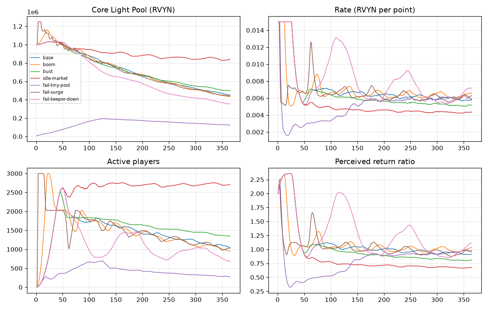

ROVYNCORE · LIGHTDIVE
潛光遠征 v3 經濟模擬器
第一輪實作結果：模擬核心、測試與情境報告
- 日期
- 2026-10-10
- 位置
tools/lightdive-econ/（新增資料夾；沒有修改任何遊戲、網站或合約檔案）- 環境
- Python 3.12.10（python.org，經 winget 安裝並驗證雜湊）；專案內獨立環境，套件版本鎖定
- 測試
- 35 項全部通過（執行紀錄：
reports/round1/pytest.txt）
- 情境
- 7 個情境 × 365 天，加上 3 個主要情境各 5 組種子，共 22 次完整執行，每天檢查守恆與不變量，全部通過
- 重要聲明
- 玩家行為是假設，不是資料；結果描述的是在這些假設下的情況，不是預測，也不是收益保證。合約未經審計、未部署。
0. 摘要
- 規則和合約完全一致：模擬器的勝算表、每日星象、出發計畫用和合約相同的整數算法，3,456 組從合約匯出的資料逐一比對，全部相同。
- 在上限沒有卡住時，結果和舊模擬一致：冷卻情境的核光池差 −6%，分配率差不到 1%。
- 最重要的發現：離開的玩家手上的卡會永遠佔住光塔上限。航程只有出發才會減少，玩家不玩了，卡就一直「活著」。基準情境到第 365 天，3,000 座光塔裡有 1,900 座閒置，新玩家進不來（3,444 人被擋），召喚收入減少，核光池從 100 萬降到約 45 萬。舊模擬沒有看到這件事，因為它在玩家離開時直接空出名額。
- 如果閒置的卡能賣給新玩家（idle-market 情境），核光池第 365 天約 84 萬、活躍玩家約 2,700 人，全體領回／投入 0.69，和舊模擬的 0.71 接近。
- 開服暴衝會碰到每日上限：第 2～3 天各湧入 1,500 人時，第 4 天有 2,207 趟出發被拒絕。
- 核光池初始金額影響很大：只放 1 萬 RVYN 時，第 365 天只剩 273 位活躍玩家，玩家報酬中位數 0.26。
- 需要你決定：怎麼處理閒置的卡（第 6 節列了 4 個做法）。
1. 做了什麼
| 部分 | 內容 |
|---|
設定檔 config/base.yaml | 所有數字集中在這裡，每個都標明來源（合約／白皮書／草案／假設）與狀態（未確定）。程式中沒有寫死任何經濟參數；少了來源的設定會被拒絕。 |
規則 rules.py、keccak.py | 18 張勝算表、每日光與星象（自己實作 Ethereum 的 Keccak-256）、超出門檻、同頻、星象、抉擇，與合約逐位一致 |
卡片與牌組 entities.py | 每副 1,000 張、張數固定的牌組（和合約一樣）；戰力、航程、停泊、續航一次、歸航；總量上限 3,000／6,000／12,000 |
核光池 pool.py | 方案 B：當天第一趟出發時用前一天的光塵固定分配率；每趟先預留，超過 1.5% 就拒絕；不會欠超過餘額 |
帳本 ledger.py | 每一筆 RVYN（召喚、續航、出發成本、提領稅、市集稅、銷毀、營運）都記帳，總量守恆 |
玩家行為 policies.py | 第一輪沿用舊模擬的假設（到來曲線、離開門檻、續航率 40%、每 7 天提領、去最深的目的地）；第二輪的玩家行為模型會接在這裡 |
每日流程 engine.py | 換日 → 歸航 → 新玩家 → 依隨機順序出發 → 市集稅 → 提領 → 記錄與檢查 |
| 情境 | 基準、爆紅、冷卻；轉售閒置卡；失敗案例：小核光池、開服暴衝、歸航程式停擺 |
2. 測試結果（實際執行，35 項全部通過）
| 測試 | 內容 | 結果 |
|---|
| Keccak-256 | 已知向量（空字串、abc、多區塊） | 通過 |
| T1 勝算表 | 18 張：機率合計 10,000、平均剛好 1.00、最高 ×10 | 通過 |
| T2 出發計畫 | 3,456 組與合約逐一比對（勝算表、風險、係數、出發成本、耗損機率、星象） | 通過 |
| T3 每日星象 | 5 個日期的光與星象和合約公式相同 | 通過 |
| T4 抉擇 | 18 張表的求穩／求險，平均在 0.97／1.03 的捨入誤差內；求穩不會空手 | 通過（36 項） |
| T5 可重現 | 同種子結果完全相同；不同種子結果不同 | 通過 |
| T6 收斂 | 波動最大的表抽 100 萬次，平均倍率在 1.00 ± 0.01 | 通過 |
| I1～I7 不變量 | 5 個情境每天檢查：RVYN 守恆、池子不欠超過餘額、預留不超過上限、分配率不超過 0.015、總量上限、航程不為負、出發次數與隊伍上限 | 通過 |
| 帳本與設定 | 不能透支、不能負數；沒有來源的設定會被拒絕 | 通過 |
| 失敗案例 | 開服暴衝會碰到上限；小核光池仍然不欠款；閒置卡會擋住新玩家 | 通過 |
此外，22 次 365 天完整執行在每天結束時都跑了 I1～I7 檢查，沒有任何失敗。每次執行的設定指紋與輸出的 SHA-256 都記錄在 reports/<情境>/summary.json，可以逐位重現。
3. 情境結果（第 365 天）
| 情境 | 核光池 | 分配率 | 活躍玩家 | 閒置光塔 | 被擋的新玩家 | 被拒的出發 | 全體領回／投入 | 玩家報酬 p10／p50／p90 | 報酬 ≥ 1 的玩家 |
|---|
| 基準 | 450,702 | 0.00581 | 1,048 | 1,900 | 3,444 | 0 | 0.96 | 0.38／0.88／1.20 | 32% |
| 爆紅 | 434,063 | 0.00659 | 957 | 1,936 | 37,241 | 0 | 0.96 | 0.34／0.87／1.18 | 31% |
| 冷卻 | 499,782 | 0.00519 | 1,351 | 1,117 | 0 | 0 | 0.94 | 0.50／0.91／1.12 | 25% |
| 轉售閒置卡 | 842,569 | 0.00436 | 2,709 | 0 | 6 | 0 | 0.69 | 0.62／0.81／1.14 | 19% |
| 小核光池（1 萬） | 123,592 | 0.00638 | 273 | 2,707 | 1,382 | 67（5 天） | 0.56 | 0.12／0.26／0.82 | 2% |
| 開服暴衝 | 442,251 | 0.00589 | 1,029 | 1,910 | 6,226 | 2,207（1 天） | 0.95 | 0.33／0.86／1.17 | 30% |
| 歸航程式停擺 60 天 | 353,820 | 0.00717 | 685 | 1,681 | 5,762 | 0 | 1.09 | 0.37／0.93／1.37 | 43% |
全體領回／投入 = 玩家提領 + 未提領餘額，除以玩家付進遊戲的 RVYN（召喚、續航、向其他玩家買卡）。玩家報酬 = 每位玩家的（提領 + 未提領 + 賣卡所得）÷ 付出。基準情境 5 組種子的核光池落在 453,050～456,580，結論不受種子影響。

4. 和舊模擬（sim-v3.cjs）的差異
| 情境 | 指標 | 舊模擬（5 次範圍） | 新模型 | 新模型 5 種子範圍 | 差距 |
|---|
| 冷卻 | 核光池 | 530,341～534,393 | 499,782 | 495,050～501,620 | −6.1% |
| 冷卻 | 第 90／365 天分配率 | 0.0065／0.0052 | 0.00659／0.00519 | | +0.8%／+0.6% |
| 基準 | 核光池 | 981,450～988,694 | 450,702 | 453,050～456,580 | −54% |
| 冷卻 | 第 365 天隊伍 | 1,453～1,467 | 1,351 | 1,335～1,365 | −7.5% |
| 冷卻 | 全體領回／投入 | 0.89 | 0.94 | 0.93～0.94 | +5.1% |
| 基準 | 第 90／365 天分配率 | 0.0054／0.0046 | 0.00712／0.00581 | | +32%／+25% |
| 基準 | 全體領回／投入 | 0.71 | 0.96 | 0.96 | +36% |
| 基準 | 第 365 天隊伍 | 2,999～3,000 | 1,048 | 1,043～1,066 | −65% |
| 爆紅 | 核光池 | 978,806～989,397 | 434,063 | 434,010～442,860 | −56% |
| （對照）轉售閒置卡 | 全體領回／投入 | 0.71（基準） | 0.69 | | −3% |
差距的原因（沒有調參數去湊數字）
- 閒置卡佔住上限（主要原因）：舊模擬的隊伍上限是「同時在玩的 3,000 人」，有人離開就空出名額。合約的上限是「同時存在的 3,000 座光塔」，離開的人的光塔仍然存在。冷卻情境本來就沒什麼新玩家，所以兩者接近；基準和爆紅情境的新玩家被擋在門外，差距就很大。
- 成本的算法：舊模擬把卡片成本攤成每天平均；新模型逐張卡記錄航程用完、停泊、續航（40% 機率）、歸航、補卡。
- 新模型多了：同頻、星象、每日上限擋人、三種卡的總量上限、牌組抽卡、未提領的餘額。
5. 主要發現與失敗案例
| # | 發現 | 內容 |
|---|
| F1 | 閒置卡永遠佔住上限 | 航程只在出發時減少；玩家離開後，手上沒用完的卡會一直存在。基準情境第 365 天有 1,900 座光塔閒置，新玩家被擋，召喚收入下降，核光池降到約 45 萬。這是規則設計問題，不是模擬的錯誤。 |
| F2 | 轉售能大幅緩解 | 如果離開的玩家把卡賣給新玩家（假設以召喚價 80% 成交），活躍玩家維持約 2,700 人、核光池約 84 萬，整體接近舊模擬。實際上會不會轉售，取決於市集與價格（第二輪模擬訂單簿）。 |
| F3 | 開服暴衝碰到上限 | 開服頭幾天分配率在 0.015 上限時，若一天湧入大量隊伍，預留會碰到 1.5% 上限，晚到的人當天不能出發（暴衝情境第 4 天 2,207 趟；小核光池情境 5 天共 67 趟）。其他情境全年都沒有碰到。 |
| F4 | 核光池初始金額很重要 | 只放 1 萬時，早期分配率低、玩家很快離開，第 365 天只剩 273 位玩家，報酬中位數 0.26。 |
| F5 | 歸航程式不能停 | 停擺 60 天時，停泊卡也佔住上限，被擋的新玩家增加（5,762 人），核光池降到約 35 萬，且全體領回超過投入（1.09），表示核光池在被提領而不是被補充。 |
| F6 | 報酬差距大 | 基準情境中，玩家報酬中位數 0.88，只有約三分之一的玩家拿回比投入多；p10 只有 0.38。對外說明時必須誠實揭露。 |
沒有發生的事：任何情境、任何一天，RVYN 都守恆；核光池從來沒有欠超過餘額（缺口 0）；分配率從未超過 0.015；預留從未超過上限。
6. 需要你決定：閒置卡怎麼處理
| 做法 | 效果與代價 |
|---|
| A | 閒置會慢慢消耗航程（例如連續 7 天沒出發，每天扣 1 次） | 上限會自然釋出；但對只是暫時休息的玩家不友善，需要明確告知 |
| B | 上限只算「最近 N 天有出發過」的光塔 | 新玩家不會被擋；但總量不再是硬上限，稀有度保障變弱 |
| C | 維持現狀，靠市集轉售 | 規則最簡單；結果取決於轉售意願與價格（第二輪模擬） |
| D | 提高光塔上限，或在達到一定比例閒置時由多簽調整 | 簡單；但只是延後問題 |
我的建議是先做 C（市集本來就要做），並在第二輪用訂單簿模擬轉售是否足夠；如果不夠，再考慮 A。這個決定會影響合約，所以先記下來，不會自行修改。
7. 限制
- 玩家行為全部是假設（到來人數、離開門檻、續航率、提領頻率、轉售價格）。
- 每位玩家只有 1 支隊伍、都去最深的目的地、不做抉擇（設定可改）；召喚價固定在開賣價；沒有 RVYN 價格與流動池。
- 以「天」為單位模擬，同一天內的出發依隨機順序依序進行。
- 結果只描述在這些假設下的情況，不是預測，也不是收益保證。
8. 下一步（第二輪，等你確認）
- 玩家行為模型：多隊伍、目的地與抉擇策略、休息與回歸。
- RVYN／ETH 流動池與召喚價自動換算。
- 市集訂單簿：離開的玩家賣卡、新玩家買卡，驗證做法 C 是否足夠。
- 365 天 Monte Carlo 多種子彙總；Streamlit 儀表板讀取輸出。
執行方式見 tools/lightdive-econ/README.md：.venv/Scripts/python -m pytest、.venv/Scripts/python -m lightdive_sim all --seeds 5。本報告由 RovynCore 開發團隊整理，2026-10-10。